软件的演化：航母是怎么造出来的
版权说明：课程讲义与幻灯片系 © 蒋炎岩 作品，依 CC BY-NC 4.0 发布；本书为非商业学习笔记，引用图片与文字均保留署名。
本讲说明：上一讲把 DeepSeek Harness 看成一个"操作系统"，静态地拆了它的需求、架构与设计。这一讲给它加上时间维度：今天看到的架构、规则和测试，是怎样一步一步形成的？为什么"航母"不是一天造出来的，而软件、数学、甚至人自己的成长，都遵循同一条"小步加增量"的演化路径？当 AI 已经能把"小事"做得很好，人还应该决定什么？讲者从 USS Midway 上的一排船模讲起，一路讲到 SWE-bench、taste-bench，最后回到 DeepSeek Harness 的提交历史——以及那个还没做成的实验：蒸馏我自己。
目录
1. 暴论与建议：当熟悉的工具开始失效
(参考时间: 00:00)
今天继续讲 DeepSeek Harness，但讲者说最近"眩晕瘫坐的频率又变高了"。
1.1 日常震惊瘫坐：ETH 与"数学的美"
(参考时间: 00:00:24)
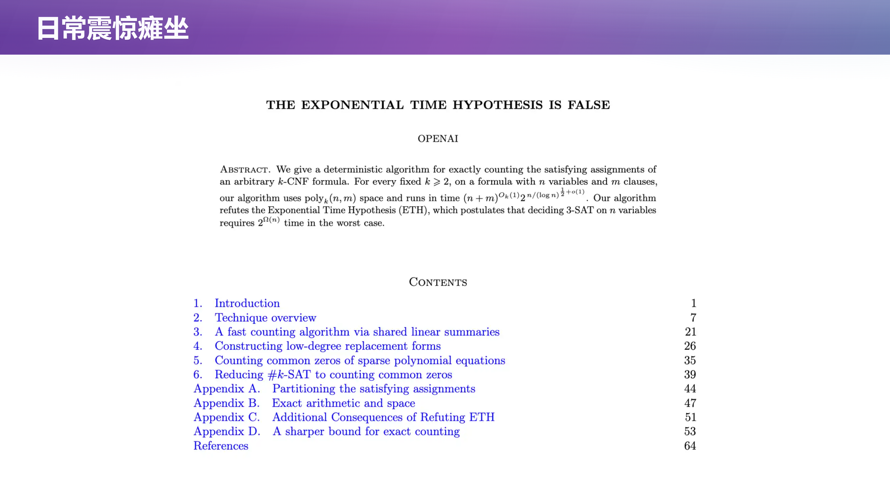
📷 日常震惊瘫坐：这一天 OpenAI 声称证伪了指数时间假说
回到原视频 (00:00:40)
那天早上起来，OpenAI 声称自己找到了一个去证伪指数时间假说（Exponential Time Hypothesis，ETH）的结果。要说明它的份量：3-SAT 这类问题原本被认为存在一个"二的 N 次方"式的下界，而他们说把这个界限往下压了一点点——注意，不是找到了多项式算法（如果真找到，P 就等于 NP，世界就崩塌了），但已经足以颠覆很多人对这件事的认知。同一时期还有一些别的大结果。
由此，讲者有了一个感觉：
我们上数学课、上理论计算机课的时候，追求一种美——但也许这种"美"是一种幻觉。
它当然是美的：有一个非常小的内核，从这个内核上可以推出很多有趣的结论。他举了 P 与 NP 的例子：为什么我们用 P（多项式时间）来刻画"有效计算"？
- 因为 P 在复合（composition）下是封闭的：一个多项式时间算法里可以自由调用另一个多项式时间算法，无论调用多少次，结果仍是多项式时间；
- 所以你可以自由地使用已有的算法库，不必为每次函数调用"付账"；
- 这带来数学上的便利，可以推出很多结论。
但这个定义也把 n² 和 n¹⁰⁰ 放进了同一个抽屉：n¹⁰⁰ 在 n = 10 的时候根本跑不出任何有用的结果，可它依然属于 P。讲者的判断是：
这某种程度上是人类为了弥补自己大脑只能装下这么多抽象而做的一个 work-around。
而理论计算机真正想问的问题其实是另一个：给我一个形式化的计算模型（比如 RAM model：CPU + 指令集，每条 load/store 花一个周期），允许你运行 k 步，你能解决的所有问题是什么？ 这才是"人造了一台计算机，它到底能做什么、不能做什么"的问题。而 P 是一个非常粗犷的近似，很多细节都被抹平了——在 k 步的模型里，数据放在内存的什么位置、要不要压缩，都会产生巨大影响，而这些在多项式时间里都不重要。
人类一直在解决"比较干净"的问题，这也包括生物学。我们花了几千年建"门纲目科种属"的分类树——那个网站建得非常漂亮，代表人类文明——但从现代生物学看，这种树状模型受到很多挑战：猫和狗很容易分，可你去看微观生物，界限就变得非常模糊，"这两个到底是不是同一个祖先来的"甚至可能不是一棵树，而是一个 graph。
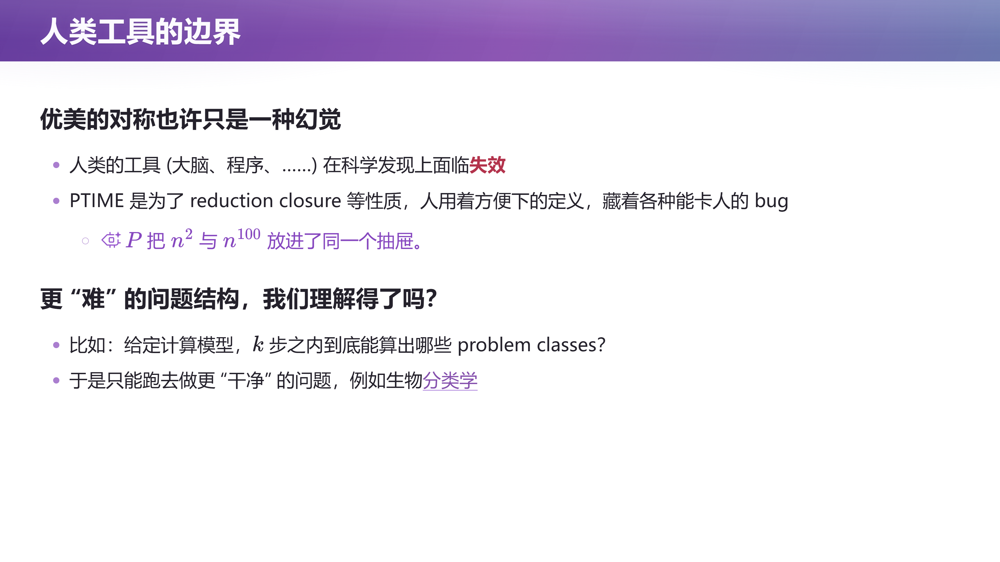
📷 人类工具的边界：PTIME 是为了归约封闭性等性质、人用着方便而下的定义
回到原视频 (00:01:20)
1.2 我们刚好站在"平坦"的地方
(参考时间: 00:07:33)
于是有一种可能性：实际世界的结构其实很"差"，我们只是刚好生活在一个非常平坦的局部（或者在某一个宏观尺度上变得比较平坦），而平坦使得经验可以被压缩。
讲者说他前一天还在和 GPT 聊这个：我们的对称性推导出了能量守恒——"物理规律在不同时空应该保持一致"这一个 first principle，就能推出总存在一个守恒量。但如果世界的结构其实非常差，我们可能只是刚好处在一个有守恒量的区域里，于是经验可压缩、压缩产生智能。
这里有一条隐约的因果链：
graph LR
A["我们刚好处在平坦的区域"] --> B["经验可被压缩"]
B --> C["压缩产生预测与智能"]
C --> D["于是有了 scaling law 与今天的一切"]
这也解释了为什么AI 会带着我们想到很多夸张的东西。
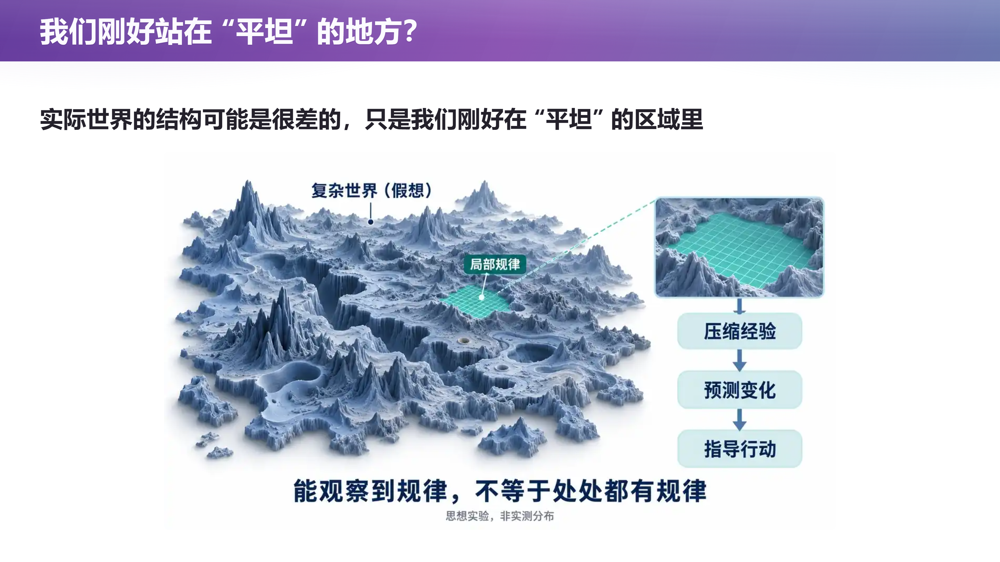
📷 我们刚好站在"平坦"的地方？
回到原视频 (00:07:40)
（本页之后，讲者还谈到"描述得出不等于驾驭得了"：洛伦兹 1963 年的三条微分方程就能定义一个系统，微小初态误差却会放大——规律很短，长期预测仍可能失效；另一种可能则是 AI 找到了可压缩的结构，只是它超出了人类惯用的表示方式。这一页在课堂上没有单独停留，见文末附录。）
1.3 暴论一：教育循环正在松动
(参考时间: 00:09:00)
讲者说他最近在小红书发了很多暴论，需要解释一下。他先画出现行的循环：
家庭投资教育，大学培养人才，企业购买劳动。
以前这条链是通的：家里给你投资教育，你疯狂学习考上大学，大学把你培养成人才，然后企业把你买走——你的劳动力是有用的。但现在这个循环越来越困难：
- 如果一个 senior 带上 agent 就超过了 junior，资本家可能就不想再招应届生了；
- 为了面对竞争，他先把自己的优势稳住，再谈"交给后人的智慧"；
- 于是你们毕业时面临的职场压力会非常大——"我招一个 agent 也可以，为什么要招一个新人、花很长时间来培养？"
AI 可能同时改变两件事（这也是幻灯片上的说法）：
- 能力的价格：花几年练出来的本领，可能变成人人可调用的服务；
- 能力的证明：一份漂亮成品，越来越难说明其中有多少是人的贡献。
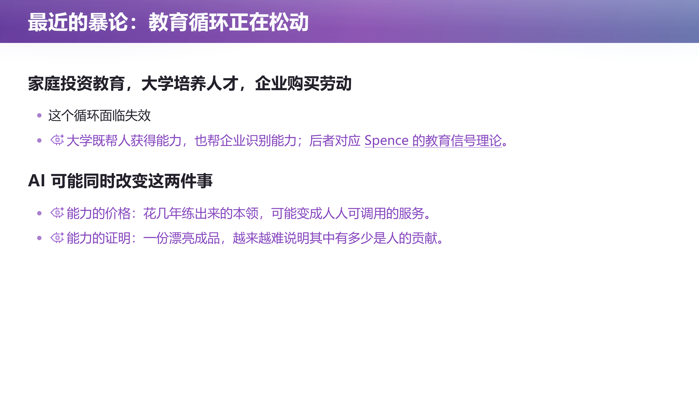
📷 最近的暴论：教育循环正在松动
回到原视频 (00:09:00)
1.4 用 AI trajectory 证明自己
(参考时间: 00:10:09)
讲者说他知道大家都很焦虑，所以"我有一个答案给大家"：
你可以用你的 AI trajectory 去证明自己。
具体做法很朴素：
- 从现在开始，把你所有的 AI trajectory 保存下来；
- 做一次压缩：把不必要的信息（比如 tool call 的输出）去掉，把有用的 assets（比如生成的图片）留下；
- 于是你得到一个属于你自己的时间轴——上面有你干过的所有事情。
为什么可行？因为现在你干任何事都问 AI：今天吃什么、春和源有没有开新店、去另一个城市怎么走……他上周去 CNCC，就是让 ChatGPT 按他的位置、偏好做一次尽量 comprehensive 的搜索。这条轨迹里能看到什么？
- 你今天跟 AI 聊物理，明天聊天文——你的想法是什么，AI 给你的是什么，你给的反馈是什么；
- 你最终生产的代码能不能跑；
- 哪些想法来自你，哪些来自 AI——这些 facts 都是可以审计的。
他承认"上有政策，下有对策"，你总有办法抵抗它；但这样一份不可变的日志对用人单位更方便：
他可以说"2026 年 3 月 10 号你跟 AI 讨论了这么一个东西，你还有印象吗？用今天的眼光你怎么看？"——你几乎无法造假。他只要随机采样，如果你对这件事有记忆、能说出正确的东西，那几乎可以肯定是你自己做的。就算你伪造了 trajectory 混进面试，一下也会被打回原形。
更让讲者觉得"恐怖"的一层是：它能评估你的成长潜力。
- 你们高考可能都是同样的分数、进了南京大学，但起跑线之后的走向完全不同；
- 有的人"进大学那一刻就是人生巅峰"，从此再没学进任何东西；
- 有的人能力不断增长，在某个时刻发现怎样和 AI 交流更好，把一个 skill 沉淀到自己的 harness 里；
- 这些方法论的变化、人生观的变化，都能在 trajectory 上被发现。
对用人单位来说，这就得到一个"人物画像"，能准确预知你在未来的指数（成长曲线）。
讲者的感受是矛盾的：
这是一件非常恐怖的事——它像在窥探你的内心，甚至限制思想刚硬。但你把这个轨迹保存下来、用合适的方式投影成简历，短期内就会得到回报。你相当于跟魔鬼签了一个契约，出卖了自己的灵魂。
一个延伸的暴论：以后不需要靠见面聊天来交朋友了。他有这样的体验：有同学来找他聊 Agent OS，聊着聊着就收敛到"英雄所见略同"。而有了 trajectory 以后：
你们只要派出你们的 agent 先聊一聊，立即就知道观点一致和不一致的部分在哪里，然后继续展开辩论，辩论完再由 agent 增强。
因为他发现，自己思考任何问题时，AI agent 都代表了该领域里所有的知识：他有一个粗糙的想法，AI 可以补全无数细节，甚至告诉他"哪些部分被别人想过了、论文是什么、哪里想得不够周到、哪些地方大家还没想过"。人类扩充知识的速度会变得非常快——至于哪天"全人类都被斩杀"，那是另一说。
他甚至开玩笑说这可以作为"颠覆性产品"：用来匹配交友。你的人格已经编码在你的 AI trajectory 里了——"只需要由 OpenAI 给你分配对象就可以了。"
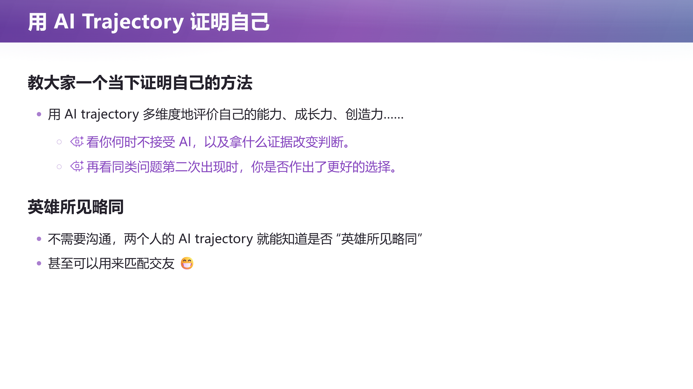
📷 用 AI trajectory 证明自己：facts 可审计，英雄所见略同也可以被算出来
回到原视频 (00:10:20)
1.5 上学是一笔期货投资：贷款上班与"AI 不扩散条约"
(参考时间: 00:17:40)
讲者把话说得更直白：上学本身就是一笔"期货投资"——今天投入学费、时间和放弃的工作收入，押注几年后市场仍然需要你学到的技能，但没有企业提前承诺收购。
沿着这个逻辑推下去，就有了"贷款上班"的暴论：
- 你要上班，就先承诺你能超过 AI、先交保证金；
- 在 mentor 带领下，如果一段时间内你超过了 AI、给公司带来了价值，就能得到回报；
- 如果你一直不再成长，保证金就不退给你了。
他说这"是真的有可能发生"。再往后，也许人类会走向一种类似核不扩散条约的东西——AI 能力不能再增长——"Anthropic 和 OpenAI 也在讨论这件事"，但目前没有缓和的趋势。
📷 上学也是一笔面向未来的投资，"贷款上班"的时代要来了吗
回到原视频 (00:17:40)
2. 软件的演化：航母不是一天造出来的
(参考时间: 00:19:34)
2.1 回到 DeepSeek Harness：一个"什么也没有"的操作系统
(参考时间: 00:19:34)
上一讲说 DeepSeek Harness 是一个操作系统：Everything is a plugin，意味着内核不带任何实际功能。
那操作系统是什么？它其实是一组关于进程的 API：创建进程（spawn / fork）、操作内核对象的句柄（handle / 文件描述符）、通过文件描述符读写、管理持久数据……
DeepSeek Harness 就是这样一种东西：它什么也没有，但它有一个 event bus，以及一组原生插件，规定了"你怎样和 agent 交互（agent.inject）、怎样和模型的上下文交互"等等。
但讲者强调了一个比喻的分寸：
航母已经造好了，但上面的飞机还处于试验阶段。 它还不知道这艘航母上能放什么武器——现在有一些试验飞机，还没有一种"航母战斗群"的概念。
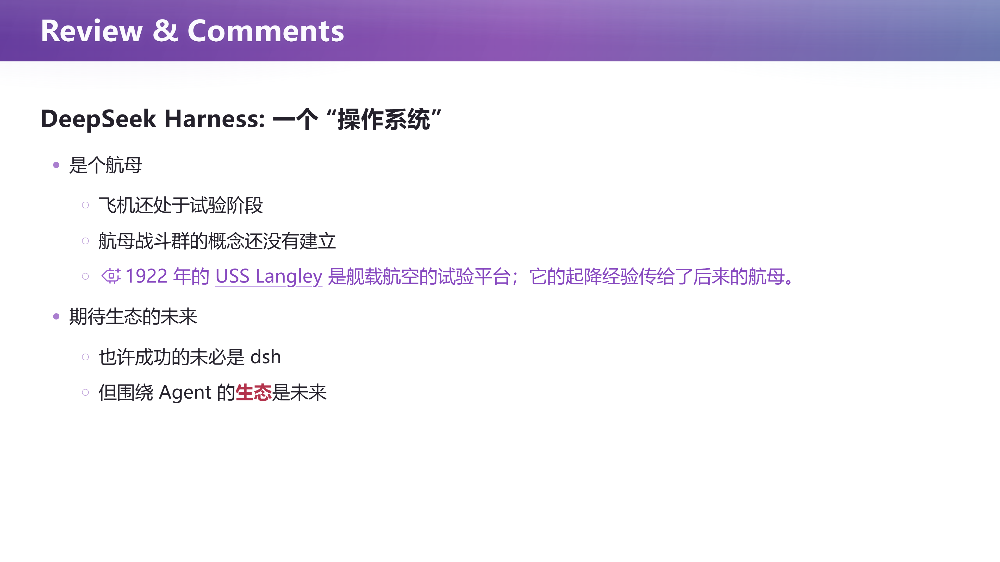
📷 Review & Comments：DeepSeek Harness 是一个操作系统——是个航母，飞机还在试验阶段
回到原视频 (00:19:40)
所以他愿意期待生态怎么长大：
也许最终成功的未必是 DeepSeek Harness——可能最后活下来的是某个商业公司的产品——但围绕 Agent 的生态一定是未来。
一个具体的信号：DeepSeek Harness 好像要发移动端应用了。如果你的 PC 可以长期开机，移动端和 PC 建立通道，你的 PC 就可以一直在后台工作——就像 Grok Bot 那样，只不过用的是你自己的 PC。讲者觉得这在中国是一种非常好的模式。
他甚至给了学生一个"许愿式"的作业：在 DeepSeek Harness 上做一个你的人物画像 / runtime 简历。因为 everything is a plugin，你可以很容易地监听各个插件的行为、你和插件的交互、插件和上下文的交互，还能把模型的输出投影下来：
于是你可以做一个叫"实时简历"的功能——你的简历每天都在更新，但你自己不需要维护它。
界面可以参考 GitHub 的贡献墙：点开一个人，看到的是一格一格的时间轴，颜色越深表示那天提交越多，摸鱼了就是空白。"虽然这个也可以作假——我现在这个墙非常绿，是因为提交都是 AI 帮我做的。"
graph LR
A["你的 agent loop<br/>（session / 插件 / 上下文）"] --> B["事件流：输入、工具调用、模型输出"]
B --> C["投影：实时简历 / 成长曲线"]
C --> D["用人单位：随机采样你的轨迹"]
插件的生态就像操作系统一样。 UNIX 诞生那一刻，做梦也不会想到今天有人会写 cat、然后管道给 claude -p；但这样的用法一直在演进当中——以前是 too long, don't read 管道给 pager 查看手册。这就是生态的未来。
2.2 航母的故事：从 USS Midway 说起
(参考时间: 00:23:37)
今天要讲一个航母的故事。造航母很难——中国第一艘航母严格来说也不能说是百分之百国产，是买了苏联的航母改装。
讲者是什么时候意识到这件事的？2019 年他去了一趟圣迭戈，那里有一艘航母博物馆：USS Midway（中途岛号），1945 年下水。下水时二战已经结束（日本已投降），所以它没去太平洋战场；但它服役了非常长的时间，1970 年代经历了一次现代化改造，1992 年还是海湾战争的旗舰。
他站在同一个位置拍了照，第一个感觉是非常震撼：
我是做软件的。这样的一个复杂系统，我不知道是如何能够构建出来的。
看内部的老照片（基本是 1945 年下水时的状态）就明白复杂在哪：
- 要走蒸汽（不像今天大部分是电器，有电就能驱动一切）；
- 要有通信线路，也要有电；
- 更重要的是要做损管——航母是战争机器，随时可能被鱼雷、轰炸机袭击。
他在船上遇到的志愿者是当年在这艘航母上服役的老兵。他很好奇：这样的系统出了故障怎么维护？老兵的回答很朴素：
这些航母的设计都是那些非常天才的人做的，我们完全不需要知道它是怎么做的。但是每一个人都会得到一本操作手册，上面明确写了"你遇到什么情况的时候应该干什么"。
就像模拟飞行一样：发现什么地方起火，你就要把几号阀门从什么状态改成什么状态。讲者从这里看出：设计者其实已经推演过各种各样的可能性，才使得这艘航母能在战争里真正起作用。这也解释了为什么"我们有那么多船，造航母却显得那么困难"。
而最有启发的，是甲板最底层的一个陈列柜：从美国海军第一艘航母到今天最先进的航母，一代一代是怎么演化过来的。
📷 USS Midway（圣迭戈）：一个 1945 年的复杂系统，是如何被造出来的？
回到原视频 (00:23:40)
📷 甲板底层的陈列柜：航母不是一天造出来的，把它追溯到最初的那个点，可能是非常简单的
回到原视频 (00:27:30)
2.3 从独木舟到"运煤船改航母"
(参考时间: 00:27:55)
把历史往前推：古代文明都有桨船和帆船。在几千年的演化里，人类终于有了足够好的材料、足够多的经验，发现"如果把船造成这个样子，我们就能在海上做长途航行"。
- 1492 年，桑塔玛利亚号原本是一艘商船，成为哥伦布首次发现新大陆的旗舰——这艘船大家还是能理解的：上面都是机械装置，是人类可以驾驭的复杂性；
- 1811 年，新奥尔良号——高压蒸汽的汽船。为什么叫"轮船"？因为它的轮子在外面（今天的螺旋桨藏在水下，看不到）。
讲者在这里给出了一个贯穿全讲的观察：这些东西都是"平滑演进"的。
人类受到自己大脑的限制和物理世界做实验的限制，任何时候都只能往前做一个小的 δ（delta）：发现某个结构有用就加上去，发现没用就减掉。
例子随手就有：
- 古代桨和帆长期并存——桨也有、帆也有；到要远航的船才发现桨没有用了，桨被收掉；
- 轮机、螺旋桨、舵曾经同时并存；终于有一天大家发现"不需要那个轮子了，只要螺旋桨就够了"，轮子就消失了。
所以弃船（汽船）越来越好，因为它可以挣钱；能挣钱，大家就会去研究更好的汽船。这就是商业驱动的演化。
然后是讲者说"那天收获最大的一张图"：USS Langley——美国海军第一艘航空母舰，而且是一艘试验型航母。它并不是今天意义上的航母，而是直接由一艘运煤船改来的。
- 运煤船看起来很像泰坦尼克号，再往前是蒸汽船（烟囱在这儿），再往前又是平滑的一步……
- 然后有一个"很天才的想法"，又是一个非常小的 δ："运煤船能载重，那我们能不能把上层运煤的部分换掉，换成一块木质甲板？这不就变成跑道了吗？"
- 换句话说："能不能把机场搬到运煤船上？"
接下来是推理与工程：
graph TD
A["运煤船<br/>（能载重、有动力）"] --> B["换掉上层煤舱<br/>加一块木甲板 = 跑道"]
B --> C["飞机放哪？<br/>船的空间有限，必须在中间"]
C --> D["甲板在上、机库在下<br/>→ 需要一台升降机"]
D --> E["升降机与甲板的高度差<br/>→ 还要滑道与人员配合"]
E --> F["起飞速度成为瓶颈<br/>→ 机库到甲板的转运成为关键流程"]
F --> G["二战：美日双方在太平洋战场<br/>证明航母的价值"]
G --> H["钢甲板航母 / 多部舷侧升降机<br/>→ 现代航母"]
这个过程里有一个很"工程味"的细节：即使装上了升降机，它降到底的位置和原有甲板之间仍可能有高度差，还需要滑道与人员配合才能完成转运。"有这个部件"和"整个流程能工作"之间，总会冒出新的接口问题。
而演化不只有"大跨越"，也有无数小改动：
- 管线设计：甚至两根管路谁在左边谁在右边，都可能影响船的可靠性；
- 比如有一根管子通的是高温蒸汽，如果保温做不好，就会影响别的东西——第一版设计没考虑到，第二版就改掉；
- 所以既有"把船改成机场"这种架构级的 significant change（可以叫重构、加了一个之前所有船都没有的大 feature），也有 bug fix 和子系统重构。
看起来我讲了一个航母的故事，其实我讲的是任何系统在设计时都会经历的通用过程。
2.4 我们也在造航母
(参考时间: 00:35:45)
讲者说"其实我们也在造航母了"，并顺手放了一个链接（"是我在造航母的链接"，属于夹带私货）。他们也想造一个像 DeepSeek Harness 一样的东西：
我们大约处在这个阶段：造出来了一条可以起降飞机的航母，但它还有很多问题。
他觉得 AI 时代很有意思的地方是：造航母的方式变了。
- 以前人类几千年是从独木舟开始——一块木头挖掉一块，人在上面，它就是个船；然后发明桨、帆、舵、各种东西；
- 现在有了一个"能力无限的、有思维链的模型"，你可以从一个起点直接大跨步往后跳；
- 你不需要把完整的东西都做出来：做一个 MVP，原型验证成功以后再回来，重新构造；
- 这就是 AI 时代的软件开发：许愿式编程——先许一个愿，看它造出什么东西；然后再用 1.1、1.1 的严格过程，把每一个东西做好。
他们的承诺是：做一个和 DeepSeek Harness 一样好的操作系统，一个真正的操作系统，同样可以支撑一个生态。
📷 从航母到软件：我们也在造航母了
回到原视频 (00:36:20)
2.5 软件的"时间维度"
(参考时间: 00:38:00)
人也是这样的：你在时间轴上成长，一开始也许没展现出什么，突然有一天领悟了一件事，能力就不断提高。你把那一刻写进日记；三年五年后想不起来，但某天再回想起来，当时的启发又回来了。人是这样，软件也是这样，任何复杂的东西都是这样。
软件早期通常只是一个非常简单的 idea：
- "我看到一个木头，能不能把它挖掉一块，就能从河这边到那边？"——一句话，你就发明了船；
- "我就是想克隆一个 UNIX，一个免费的 UNIX 供大家用"——这就是 Linux。
如果这个想法走在正确的道路上、确实能解决真实世界的问题，你就可以通过刚才那种"往后改造"的方式成功。
但这里有一个陷阱：过早引入复杂的架构，可能反而约束未来的走向。
每个提前设计的扩展点，都暗含着一个预测："未来会沿着这个方向变化。"一旦预测错误，扩展机制本身就变成了需要维护的负担。
这一点你必须体验过才知道：跟 AI 编程时，AI 会给你设计一些架构，但随着软件维护、每次修改，它越来越难维护；随着 essential complexity 的增加，一开始那个架构可能就是错的。
而人类历史上，很多架构经受住了时间的考验，同时也有很多部分被重构——就像航母：从真的有轮子的轮船，到今天我们还叫"轮船"、但它没有轮子了。
为什么上大学要上基础课？很大原因是：你要去学习软件系统早期那些设计，以及它怎么随时间演化。
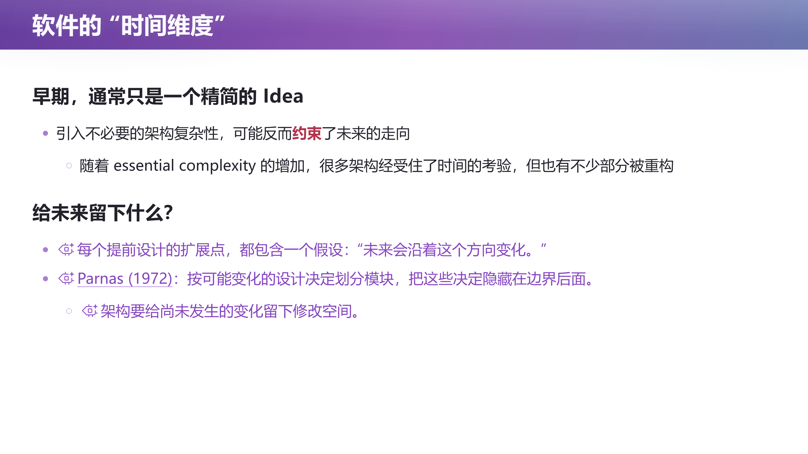
📷 软件的"时间维度"：早期通常只是一个精简的 Idea
回到原视频 (00:38:00)
2.6 演化：哪些东西容易换
(参考时间: 00:41:00)
讲者说，幻灯片里 AI 给的调度器和 Python 例子"并不是很好的例子"，因为AI 还是没有办法共情——他想讲演化时，航母显然是更好的例子。但这两个例子依然值得看：
Linux：调度算法可以被替换。
- O(1) 调度器 → CFS（Linux 2.6.23 进入内核）→ EEVDF（6.6 起逐步引入）；
- CFS 同时引入了 scheduling classes，把具体调度策略封装在模块边界后面；
- 这个例子值得观察的地方是：局部算法的淘汰，也能成为整理架构边界的机会。
讲者从 Python 2.7 时代过来，感慨说你们入学时就没见过 Python 2 了：
- Python 2 和 3 不兼容，其中一个很有意思的语法是
print后面跟空格——print是一个内建语句； - 这在当时的 parser 上就带来一些小麻烦；
- Python 3 里
print必须是函数，不再是 keyword 性质的东西。
为什么当年要这么设计？ 因为在第一天设计这个"给人类用的最小编程语言"时，'print 一定要好用'——那时几乎除了 print 没有别的功能。他不会想到今天整个人工智能的生态都安在 Python 上面。
Python：已经被依赖的语义很难换。
- Python 3.0（2008）明确不向后兼容，重新整理了文本与二进制数据的语义；
- Python 2 原定 2015 年停止支持，但大量用户尚未迁移，期限延到 2020 年；
- 教训是：迁移成本要算上所有依赖旧行为的代码——这些依赖会约束后续设计，而不只是"解释器内部改了多少行"。
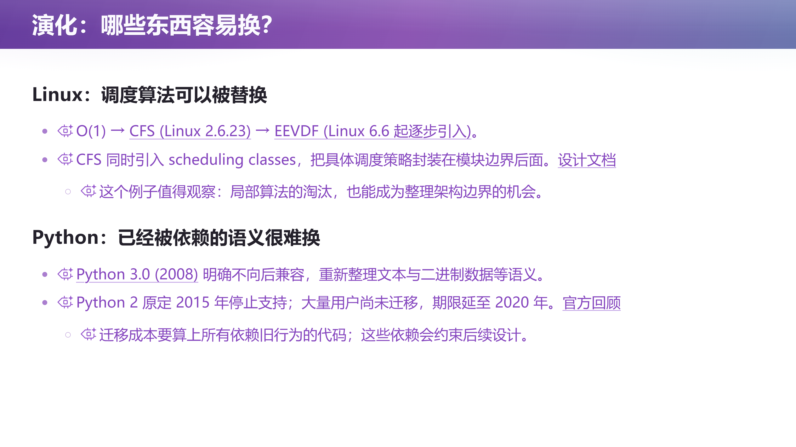
📷 演化：Linux 的调度算法可以被替换，Python 已被依赖的语义很难换
回到原视频 (00:41:00)
（这一节在幻灯片上还有第三个例子：Kubernetes——核心与生态一起演化。核心的 idea 很精简：声明期望状态，controller 反复观察、调整，让实际状态趋近期望；CRD + 自定义 controller 把领域知识带进来；K8s 1.24 移除内置 dockershim，把与 Docker Engine 的适配移到核心之外。课堂上只是带过，这一页没有停留，见文末附录。）
2.7 理解复杂软件的两种姿势：简化版本 + 版本历史
(参考时间: 00:43:20)
讲者说，我们一直都在用简化的版本去理解软件：
- Linux 0.11 真的很简单，什么也没有，没有任何所谓 advanced technology。你们现在学操作系统可能从 xv6 开始，但 0.11 更原始；
- 你们今天上课，老师会说"这个东西怎么牛逼"，但所有牛逼的东西，中间一定有一个平滑演进的过程；
- 所以如果你觉得一个很厉害的东西"不知道是怎么做出来的"，你就回到一个不存在这个东西的版本——回到独木舟——再看它一点一点是怎么把它加进来的。
他甚至觉得，现在"定义、定理、证明"的学数学方式有点反人类：
它直接告诉你这个东西，你自己去悟——而没告诉你人类走了多少弯路、都失败了，最后才发现这是正确的路线。
回到 Linux 0.11，你可以直接看懂：所谓系统调用，read 就像一个函数调用一样进来，执行 A、B、C 三个操作，再回去。而讲者是在 Linux 2.6 的时候进入这个世界的；今天的 Linux 已经复杂到人类自己也理解不了，但他理解问题时经常回到 2.6：
"如果在 2.6 里我要做这件事，我会怎么做？这么做好在哪、不好在哪？那我今天应该怎么做？"
更妙的是，绝大部分问题都可以回到 0.11 的模型上问。他给了自己的课堂例子：
- 我要向操作系统要一些信息，是不是一定要穿过操作系统的边界（做一次系统调用）？
- 有没有可能让操作系统和应用程序共享一个页面：OS 每秒写一次时间，进程切换时把当前 CPU 的 id 写进去，而应用只读不写？
- 这件事在 0.11 里就能想清楚，然后再把它"往后 rebase"成今天的一个 feature。
于是就有了那个很漂亮的方法论：
graph TD
A["今天的复杂系统<br/>（看不懂某个 feature）"] --> B["回到最早的版本<br/>（0.11 / 独木舟）"]
B --> C["在这个简单模型上<br/>把 feature 做出来"]
C --> D["git rebase：把这次提交<br/>往后挪、往后挪、往后挪"]
D --> E["在几个关键提交上<br/>看它和谁打架、冲突怎么解决"]
E --> F["你就理解了今天的样子"]
为什么这个方法有效？因为如果所有东西都搅在一起，你的软件就不可能维护。好的架构一定把复杂性分解下去了；你新加一个 feature，它跟软件的绝大部分耦合都相对比较松。所以你只需要知道在几个关键的提交上，你的 feature 和谁打架了——那就是你必须理解的 essential complexity。
他顺带解释了"为什么 Pre-LLM 时代说程序员有三大浪漫"：做一个操作系统、一个编译器、一个数据库（也可能是做一个 CPU）。今天这个答案变了：
你们看所有投 AI infra 简历的同学都说："我在 nanoGPT / nano-vLLM 上改了一个东西"、"迁移到多卡上"、"我有几块树莓派或者 RK3588 那种带 NPU 的卡，做了并行推理加速，然后接入了一个我魔改过的 nano-vLLM"。
这些事情都是有意义的——"但是你们可能没有意识到你们在做"。讲者说，他把"造航母"和"你们学习"都用同一个 git model 解释了。
2.8 到了"今天"：仍然是状态机
(参考时间: 00:48:00)
讲者再次强调这是人类的局限：
人类只能理解简单的东西，而演化其实就是人类把一个东西一点一点造出来的过程。如果航母、软件就摆在你面前，没有人能看懂——尤其是新入局的新手，你会感到无尽的复杂性。但你可以通过理解它的发展历史，rebase 你想要了解的 feature，来理解任何东西。
而在"今天"这个时间点上，软件依然是状态机模型：
- 一个版本是一个状态；
- fix、feature、chore、refactor……都是让项目进入下一个状态的动作；
- 一次修改能否成立，要看它如何改变已有行为、是否仍满足必要约束。
也正因为有了计算机，我们才第一次能把"人类创造一个东西"的过程从初始状态完整记录下来——git history 就是一个宝藏。讲者由此抛出一个更大的想法：AI 时代，作为"还能守住人类最后一点创造力"的人，是不是应该去干更大的事？
- 能不能把数学的发展史构建成 git？
- 能不能把造船、造航母的历史脉络构建出来？
- 能不能把人类知识历史里"分支之间的 rebase 关系"整理出来？
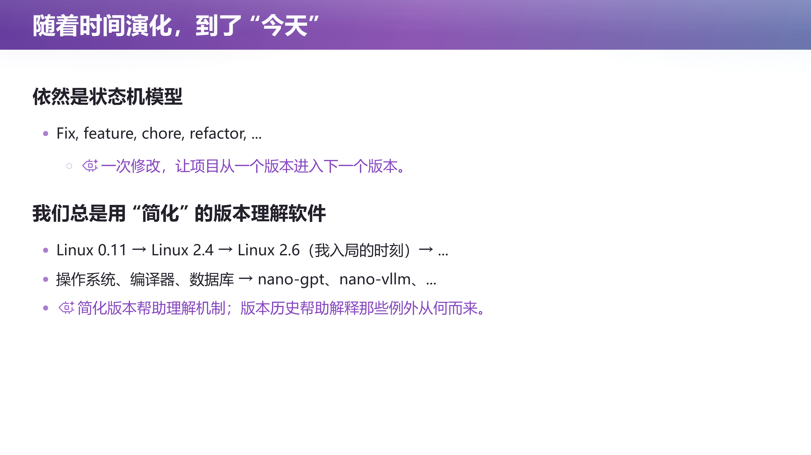
📷 随着时间演化，到了"今天"：依然是状态机模型，我们总是用简化的版本理解软件
回到原视频 (00:43:20)
2.9 从"小事"到 SWE-bench
(参考时间: 00:50:47)
讲者把这一讲的落点收在一个推论上：
所有的东西都是由一个一个提交组成的，而每一个提交都是一个小任务。
这是一个非常关键的假设。小任务就意味着：绝大部分提交都是 bug fix 或者小的 feature request。
那自然要问：AI 能不能完成这些小事？
SWE-bench 是整个系列里知名度最高的工作之一（现在还有更长的，比如 terminal-bench）。它衡量的是：模型在软件工程这种 GitHub issue 任务上表现得有多好。
有意思的是它的时代背景：这是一篇 2023 年的论文，GPT-4 时代。你看它的输入还是"模型输入"，而不是 workflow——那时候没有 agent 能真正跑起来。它的输入包括：model input、issue 是什么、一个 golden patch、一个 generated patch，以及一系列测试用例。
讲者也坦言它不完美：
- 他们仔细研究过 SWE-bench，它绝对不是一个完美的 benchmark；
- 很多"fix a bug"的任务，bug 的引入其实是因为代码源头上设计出了小问题，以至于要不停修修修；如果他是人类，更倾向于重构那段代码，而不是 fix 这个 bug；
- 但不管怎样，这是一个明确的任务、明确的反馈信号，可以评估"这件事做对没有"。
于是它成为衡量"模型做小事的能力"的标准。而它的历史数据相当惨烈：早期 Claude 2/3 的 resolve rate 只有 3.779%（当时 Claude 在 OpenAI 如日中天的时候，只能声称"在某些垂直领域做得好一些"）。
但讲者认为这篇工作最有 vision 的地方不是分数：
它的意义在于：做这种小事，在软件演化里的价值有多大。
因为在演化路线里，绝大部分任务都是小事——从 GitHub 上某种意义上 random sample 出来的，多半是"我今天程序 crash 了，你帮我修了"、"这个日期计算没算闰秒，我想加一个星期"、"这个功能能不能做个小改进"。你日常开发，绝大部分时候都在干这件事。
所以：
如果有一天 SWE-bench 被解决，就意味着工程里绝大部分琐碎的事情都被解决了。 这也隐含了一句话：低级工程师就被斩杀了。
它预见了今天我们大家都非常焦虑的情况。但它也留下了问题：SWE-bench 没有覆盖什么？
- 初始状态：在 initial commit 的时候，你总有一个计划——"我们要造航母了"，脑子里有一个想法，于是建一个 repo、放一个 initial state、放一个计划。这件事不好 benchmark；
- 架构级的重构：当软件到某一个程度，你终于受不了那些琐碎的 bug fix，开始重构。重构意味着架构上的变化（可能是局部的，也可能是总体架构）；
- 讲者举了实例：他们见过一个代码写得像 slop、逻辑非常复杂——根源是两个模块没有解开，写代码时必须带着那两个模块的状态；他们的办法是把整个模块一起重构，重构完 bug 就消失了，那个 issue 根本不需要被 fix。
架构变化的成本有多高？他举了"把某大型项目从 Zig 全部迁移到 Rust"的例子：
这是非常疯狂的事情，"竟然没有出笑话"。当时我的感觉是：这可以吗？这不会留下两个非常糟糕的 bug 吗？——没有。当然也跟项目结构有关；如果你去动 MySQL 这种，我估计就不行了。
而且架构有很多层：顶层设计架构、每个代码文件里的架构、甚至一个函数里到底写 functional 还是 imperative 的微架构。任何相对较大的、到 subsystem 级别的架构改变：它什么时候发生？它应该什么时候发生？到底什么样算好？
这些在人类世界里也非常稀疏。 而稀疏就意味着：模型没有办法通过大量反馈和样本学到它。但人类是很好的 few-shot learner——讲者说，他在圣迭戈看到航母时想到了一件完全不相关的事，展开了非常长的思维链，刷新了自己的认知。
graph TD
A["给定仓库 + GitHub issue + 测试"] --> B["模型 / Agent 生成 patch"]
B --> C{"测试通过？"}
C -- "通过" --> D["记一次 resolve<br/>（小事被解决）"]
C -- "不通过" --> B
E["SWE-bench 覆盖：小任务"] -. "未覆盖" .-> F["初始状态 / 计划"]
E -. "未覆盖" .-> G["架构级重构与时机"]
E -. "未覆盖" .-> H["多个目标的 trade-off"]
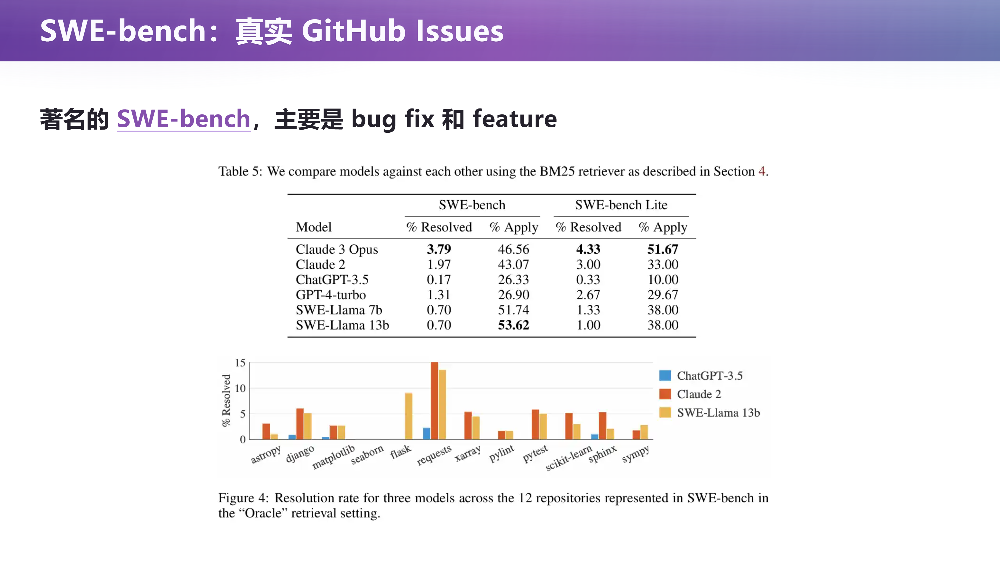
📷 SWE-bench：真实 GitHub Issues，主要是 bug fix 和 feature
回到原视频 (00:55:00)
2.10 从解题能力到 Taste
(参考时间: 01:00:50)
到 2025 年 7 月，mini-SWE-agent 已经在 SWE-bench Verified 子集达到 65%（不同子集与运行设置要分别看待，不能把这个数字当作所有工程任务的成功率）。由此产生一个关于 scaling 的直觉：
只要某个 benchmark 已经"有一点点希望够到"，持续投入模型能力、训练和工具，最终很可能把它攻下来。
他甚至讲到刷分的"间接泄漏"：现代模型如果要刷分，不会直接把测试用例漏进训练，而是把"方法"漏进去——比如"遇到 SWE-bench 类型任务要疯狂自己写测试"，这样分数就能高一点。
但当"小事"都被解决之后，问题变成：
现在我们需要一个足够好的 taste-bench 了。
因为在小事上，反馈是明确的：做完了 / 没做完，对了 / 错了。而到了"大事"（架构决策），强化学习的反馈非常稀疏，而且并不是谁比谁好：
- Linux 当时那样做一个 UNIX 可能就是最好的吗？后面还有更多经验；
- 重构的时候有多个可能的架构：要不要用 event sourcing、干脆把底层架构也换了？还是加一层缓存？还是用 scale 的方式解决性能问题？
- 我们面临很多选择，而每一个选择都不是严格"谁比谁好"。
就像高考：几张试卷，每张一个总分，加起来作为你的总分。但这里其实很微妙：
- 不同科目代表不同类型的能力，甚至不同题目都代表不同类型的能力；
- 你的画像是一个 vector，而不是一个标量；
- 也许需要一个 human vector：根据你的 AI trajectory 得到真实的画像；
- 尤其对真实项目来说，我们需要的是 trade-off：架构大改成 event sourcing，重构代价变大、风险增加；想降低风险就要把改动做平和一点，但工期就拉长，这次迭代可能到不了目标。
当你面临十几个目标要权衡的时候，其实没有绝对的好和坏。 这也是现在 AI 做这件事还做不好的原因。
所以 taste-bench 不能是 Yes/No/Score，而应该是多维度的相对比较：
- 给两份都能通过测试的实现，放在相同需求下比较：谁更贴合问题？谁更容易理解？下一次修改有多贵？
- 再给一个后续需求，观察原来的优劣是否反转；
- 比较判断有很长的历史：Thurstone（1927）就研究过如何从成对判断中度量难以直接计量的属性。
讲者的判断是：小事已经解决了，大事我们还需要一个 taste-bench。 而像"解数学"这种事，可能已经不是小事了——它已经涌现出我们无法理解的能力。也许下一个 benchmark 出现的时候，"我们就可以见证人类的末日"。
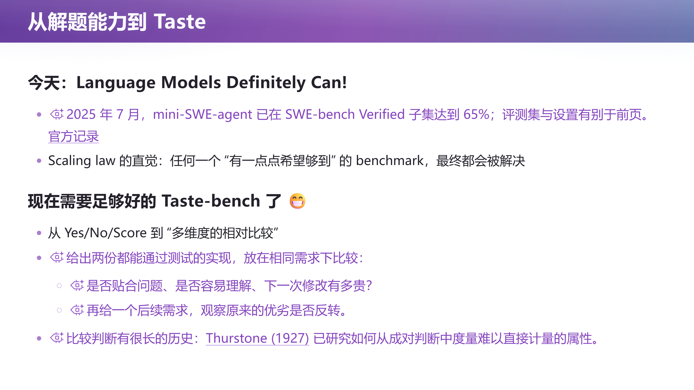
📷 从解题能力到 Taste：从 Yes/No/Score 到多维度的相对比较
回到原视频 (01:02:00)
3. 回到 DeepSeek Harness：从提交历史里学工程
(参考时间: 01:04:33)
3.1 1000 个提交就是一部航母建造史
(参考时间: 01:04:33)
讲者说"DeepSeek 还是太慷慨了"——它把从第一天起的所有提交都给你看，于是你能看到整艘航母的构建过程。
他拿到 DeepSeek Harness 后干的第一件事，就是整理它的提交：最早的 1000 个提交。
- 初始化就相当于航母的 initial state：当他真正决定造航母的时候，就有了起点；
- 刚开始是做一个 MVP：微内核、需求和架构的场景；
- 第四个提交就以源码形式 vendor（内联）了 Cordis 的框架包。
这里有个很有意思的事实：Cordis 在 DeepSeek Harness 之前已经存在好几年了，而且它其实是一个个人项目——那位作者当时想要管理他的一些 QQ bot 插件，发现每次加载、卸载都很麻烦，于是"干脆做一个架构吧"。
他也经历了一个过程：一开始管理插件没有任何章法，然后突然有一天他发现了一个方法——这个发现就很重要。
于是原始的几个架构设计 commit 成了很重要的东西，最终形成了 Cordis；而 DeepSeek Harness 在第四个提交就实现了对 Cordis 的 merge：everything is a plugin。接着它开始大量实现：先做 LLM inference，再做 agent loop，然后 1.1、1.1 一点一点往前。
所以你看：每一步都是小的。
graph TD
A["2026-06-10 init<br/>空仓库 + 微内核设想"] --> B["第 4 个提交<br/>vendor Cordis（everything is a plugin）"]
B --> C["实现 LLM inference"]
C --> D["agent loop"]
D --> E["安全地跑在真实机器上<br/>（进程 / 文件 / 终端 / 云服务器的抽象 + 护栏）"]
E --> F["2026-07-19 ~ 08-06<br/>从终端到浏览器（DOM tree）"]
F --> G["可回放的会话成为唯一 source<br/>（event sourcing）"]
G --> H["今天：2 万多个提交"]
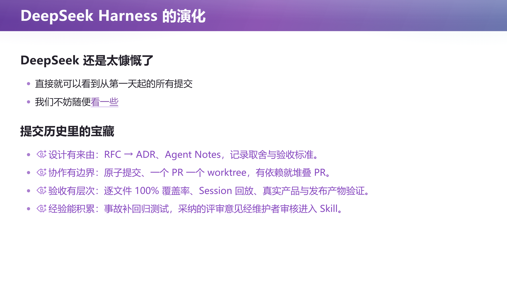
📷 DeepSeek Harness 的演化：从第一天起的所有提交都看得到
回到原视频 (01:05:00)
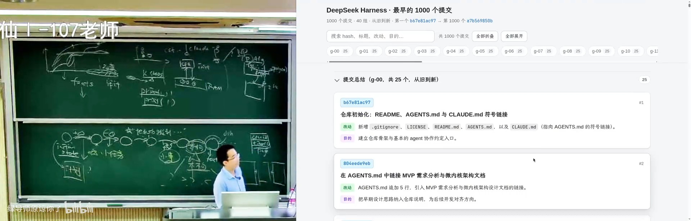
📷 最早的 1000 个提交：初始化、MVP、vendor Cordis、inference、agent loop
回到原视频 (01:07:05)
讲者现场还让 agent 把这些提交总结成"航母式"的时间轴，结果 agent 真的打了一个航母的比喻（"这是我不想要的"）：
- 2026-06-10 到 06-20 十天：把可回放的会话做成唯一的 source；
- 把 agent loop 与适配器分离；
- 把一个"能跑的循环"变成"在真实机器上安全地跑"——不是新增多少工具，而是把进程、文件、终端、云服务器做成抽象，并增加护栏（超时、取消、溢出……）；
- 7 月 19 日到 8 月 6 日：从终端到浏览器。 这是一个非常重要、也非常重要的决定——一开始他没想到：如果用浏览器这个框架加上一棵 DOM tree，会让界面变得非常容易扩展。
讲者认为这个比喻"还是有点对的"：一艘船是很通用的（可以载货、载人），放上一块外部甲板，就变成了可以试验各种飞机的航母。这就是飞行甲板的那一步。
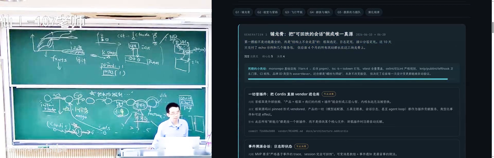
📷 agent 把提交历史总结成的"航母时间轴"（讲师说这个比喻不是他想要的）
回到原视频 (01:09:30)
当然他也承认这肯定有问题：如果真的一条条看提交，还会漏掉很多有趣的东西。
3.2 设计有来由：RFC → ADR → Agent Notes
(参考时间: 01:11:18)
他让 AI 从提交历史里总结"演化里的工程实践"，第一条就是设计有来由：从 RFC 到 ADR，再到 Agent Notes。
RFC 是什么？ 你们都知道网络中那些 RFC（Internet 协议的文档）。它的字面意思是 Request for Comments——一种草案：
如果我要做一件重大的决定——比如"我要不要把 TUI 扔掉"、"我的 event bus 应该怎样设计"——那我是不是应该先放一个 RFC 上去？
因为每个人都有假设，做这种重大架构决策的时候，他可能是错的。所以先放一个 RFC，内部几个小团队开始讨论。
讲者说他们自己也这样做：放在飞书上、一个共享文档，大家先 comment；需要开会就坐在一起开个会；讨论完之后，甚至可以直接做个 MVP。
现在比以前好：以前开发成本很高；现在我们一旦有一个想法，就可以直接扩展一个、另开一个分支，看效果；效果不好就把所有东西都砍掉，回头再慢慢来。
讨论收敛之后，就写成一个 ADR（Architecture Decision Record，架构决策记录）：保存最后的选择以及理由。
现场演示里有一个很好的具体例子：
- 一开始，system prompt 存在 request header 里，其他消息存在 session 的事件里；
- 后来出现一个需求：支持在对话中途替换 prompt 的模型——这需要往历史里追加一条
system角色的消息； - 但"prompt 在 header 里"的架构没有办法解决这个问题，于是就需要一次架构重构。
这个重构比起"在航母上加一层飞行甲板"要小一个量级，但对于上下文管理这个 subsystem 来说，也是一个非常重要的设计决策。而当时代码是不改的（"大家讨论这个东西应该怎么样"），9 月 5 日再进入 implemented 阶段——这里有一个状态机：不确定的、需要长时间运行的任务，会有一个 agent loop 的状态，这个状态也在整个 git repository 里。
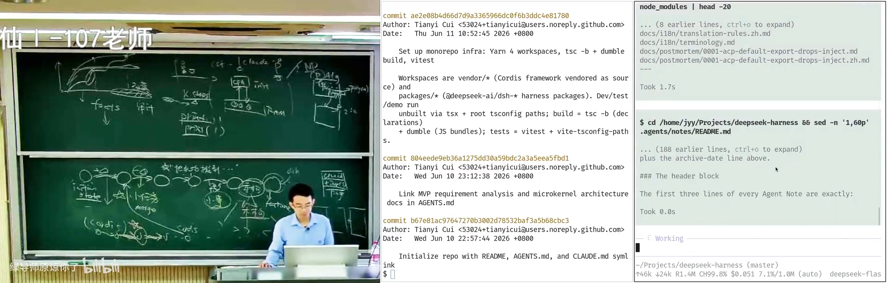
📷 RFC 与 ADR：设计要有来由，重大决策先征求意见再落成记录
回到原视频 (01:12:20)
3.3 协作有边界：原子提交、一个 PR 一个 worktree
(参考时间: 01:16:07)
第二条是协作有边界。现场看到的提交数量令人印象深刻：
两万两千个提交。 每一个都是一个小提交。
讲者感慨："以前我们要做这件事要写多少脚本？"——写一个脚本，还很自作聪明地用人脑计算机去想该 grab 什么、然后 word count……"我们发现这么多生命都浪费了。"（他也承认，某种程度上那是防止脑子生锈的练习——"当你打开编辑器的时候，你就是程序员"。）
他们的协作模式是演化出来的：
- 团队小的时候是 linear history，没有 merge——好处是每一个提交都是单独的、可理解的；
- 但如果以后有 external developer，就会变得非常麻烦：每次 main 动了，所有分支都要 rebase，rebase 以后要触发所有 CI 流程。
幻灯片上的总结更完整：原子提交让一个逻辑变化能够单独理解和检查；一个 PR 对应一个 worktree（同一 Git 仓库的独立工作树），让不同任务各自修改、安装和测试；有依赖的工作组织成堆叠 PR，让上层建立在下层修改之上。
不过讲者也提醒隔离的边界：在课堂材料里，DeepSeek Harness 曾遇到"在一个 worktree 里安装 Git 钩子管理工具 Lefthook，却影响了其他 worktree 的 hooks"的问题。
目录分开了，不代表所有底层状态都分开了。 工程规则也要通过实际故障检验。
3.4 验收有层次
(参考时间: 01:17:28)
第三条是验收有层次：
- 逐文件 100% 覆盖率：可以推动开发者处理错误路径与清理逻辑；但执行到一行代码，不等于它的行为已经正确；
- Session 录制与回放：固定模型响应，可以检查组装后的事件、持久化结果和用户输出，也避免每次回归都依赖真实模型服务；
- 真实产品入口与发布产物验证：从源码运行正常，不代表安装包带齐了 worker、资源和依赖；在错误端口上打开一个页面，也不能证明刚修改的 GUI 已经生效。
3.5 经验能积累
(参考时间: 01:18:00)
第四条是经验能积累：
- 一次事故可以留下复盘、修复提交和回归测试；
- 被采纳的评审意见可以整理为候选规则，再由维护者审阅并更新 Skill；
- 这样下一位开发者或 Agent 不必完全依赖记忆。
但讲者马上补了一句冷静的话：规则也会积累负担——所以 Agent Notes 要归档、重复要求要清理、检查要考虑运行时间。流程本身也是软件演化的一部分。
3.6 把"不好"挡在项目之外
(参考时间: 01:17:50)
但是，所有这些由人类保证的东西，都没有办法阻止 AI 生成 AI slop。 谁用谁知道。
AI 一定会这样：只要你不说清楚，它有两种反应——
- 如果你用了那种"grill me"式的技能，它就疯狂地问你、一遍一遍问，问到你不耐烦为止；
- 如果你不说，它就猜，然后想着完成任务，去做很多不必要的测试和验证——因为你要做的事情本来是实验性的，它没有你的上下文，做了很多东西，让维护和修改变得非常复杂。
所以最终，这个项目还是由人来驾驭的。人显然不可能在短时间内做成这么大的东西——"相当于极速造航母"。而为了防止 AI 毁掉整个项目，他们做了很多事：
第一，文档的一致性（上一讲的双语文档）。
- README 有中文、有英文，两个文档严格保持一致；
- 靠一个"我觉得很脏"的 YAML 文件来处理；
- 起到了效果——至少阻止了文档不一致——但也付出了代价：repo 膨胀了，一大堆意义不明的 YAML 文件；
- 当然可以在 IDE 里配置"不显示这些文件"，眼不见为净；"但它实际上是存在的"。
由此他再次强调那个观点：
软件项目不应该用目录来存储。 软件项目里有很多复杂的东西，它们之间是有关联的；我们应该把这些关联存储下来，而不是……当然我现在用 YAML 来存储这些关联，但用文件可能只是一个 work-around。
第二，生产"与人类对齐"的好代码——没有好办法，只能一个一个强行排除。
我们没有办法真的阻止 AI 生成 slop。那么我们就想：AI 会生成什么样的 slop？给它写一个验证器。
在 commit 的时候、push 到 remote 以后、或者每日 run 的时候，去检查"AI 有没有犯什么错误"；如果犯了，就阻止这次提交。
一个意外插曲：他在 DeepSeek Harness 项目里让 agent 总结"里面的 gatekeeping 是怎么做的"，结果因为工作发生在 dsh 项目中，Agent 自动触发了 dsh-prose-standard skill——生成的说明也受到该仓库文风规范的影响，之后他又加入了一些引导提示词。
同一个写作任务，仅仅换一个工作上下文，就可能被另一套规则塑形。
这个 skill 是"文字编写的规范"，有点 un-slop 的感觉：删掉推理过程、重复和修饰。
为什么这件事重要？讲者讲得很透：
- 如果你用 AI 写文档，它会把思维链里的东西——"这个东西要这样设计""怎么验收"——什么都写进文档；
- 于是你写一个文档，说"我做了 A、做了 B、又不是 C"；这些 A、B、C 实际上都和实现（比如
index.ts）关联起来了； - 当实现改掉的时候，文档和实现就必须同步修改——它引入了同步修改的代价；
- 更糟的是：AI 编程迭代几轮以后，A 和 B 可能真的没有了、代码里也删了，但那个"不要 C"却被错误地留下来了。很多不该留下的东西，在软件演化过程中被留在了 repo 里。
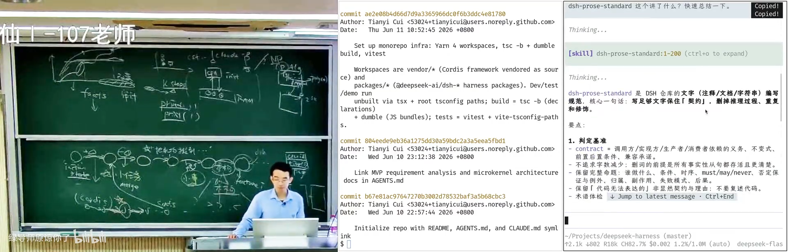
📷 一个意外的插曲：在 dsh 项目里提问，自动触发了 dsh-prose-standard skill
回到原视频 (01:21:20)
第三，七类检查器。 讲者带大家看 DeepSeek Harness 里的 checker，一共七类：
- 代码与类型；质量；架构与依赖约束；行为正确性；持久化与兼容性；文档、构建、交付与评审；以及测试。
首先是所有项目都应该用的 lint 与类型检查机制——"虽然你们可能不用"。它可以把很多低级错误挡在门外：
虽然模型能力很强，但不代表它不会犯低级错误，尤其是在比较大的代码库里。
具体例子（都是现场从规则里翻出来的）：
- 改了接口，所有调用方必须一起改——编译器本身可以找到；还要检查"所有东西都能编译"；
- 新增的不同用途的 id 不能混用（不能因为都是字符串就混用）；
- 同一份代码遵守同一套 lint 规则；
- 类型安全与异步正确性：检查丢失的 Promise、异步不回收、危险的断言、
@deprecated； - 禁止
unsafe：对 hobby project 来说任何不安全特性都能用；但在严格的项目里（比如某些包不允许引入 unsafe），Rust 可以加一条规则禁止你使用它——于是你第一次实现、或者 agent 做实验性实现时可以用，但它永远不可能通过 lint 检查、推到远端，必须再改再改，直到做好； no-unused-variables：这是非常有用的规则——"你们都写过for (int i = 0; ...)里定义了 j、然后j++的状况"，未初始化/未使用，编译器和 lint 都能帮你找到；- prefer const、no unused expressions、作用域检查；
- 每个非第三方的导出必须有 JSDoc；
- 禁止硬编码 UI 文案；
- 还有一些与项目本身绑定的检查：runtime、closure、climb domain graph、Cordis config……
讲者说："我肯定没有办法在课上一个一个讲过来"——因为它和具体项目、具体语言绑定，讲起来会很枯燥。他展示的更多是一种方法：
如果你遇到一个你感兴趣的项目（比如你是做 bioinformatics 的，真的要靠它拿到 PhD），就用我的方式来打开它：总结它的文档质量保障是怎么做的、总结它的提交、把它化成一条 commit 时间轴。
第四，门禁分层。 在整个流程里：
- pre-commit 时做一系列检查，包括 i18n 配对——中英文文档必须一致，如果 commit hash 对不上，pre-commit 直接拒绝；
- pre-push 时做 type check；
- CI 时做更复杂的检查。
还有一个很有意思的控制流检查：
我要求所有的控制流都是由我的插件发起的。这样如果 agent 不小心写进一个硬编码的函数调用，我就可以把它拒绝掉。
这背后的取舍讲得很清楚：
- Agent 有时会把一个功能完整实现一份，然后在你的代码上加一行函数调用直接调过来，第二天就回来破坏了你的架构——因为它没有遵循架构约定；
- 你可以在提示词里写"请严格遵循我的架构、所有东西都要这样用"，但这句话对人是没有意义的——你做了一个干净的架构，默认所有人都会遵守；
- 写进去以后可能让指令遵循更好，但会让文档变得人类更难读。你总要做这样的取舍。
其他规则还有：浏览器代码不能无意间依赖 host 实现；浏览器应用请求相对当前文档解析；网络调用不能悄悄绕过用户代理；窗口更新应该怎么处理……
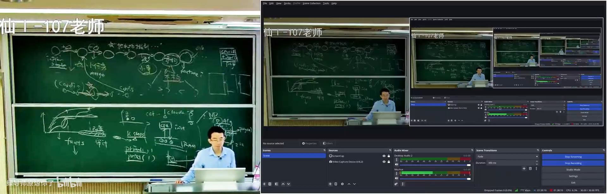
📷 七类 checker：代码与类型、质量、架构与依赖、行为正确性、持久化与兼容性、文档/构建/交付/评审、测试
回到原视频 (01:22:40)
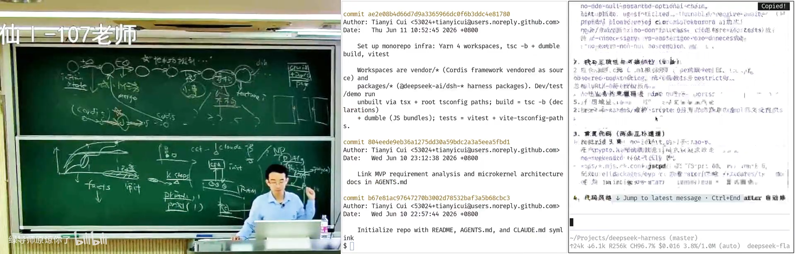
📷 lint 演示：这种 `A = 1` 的代码过不了 lint —— 最基础一级的守门员
回到原视频 (01:26:50)
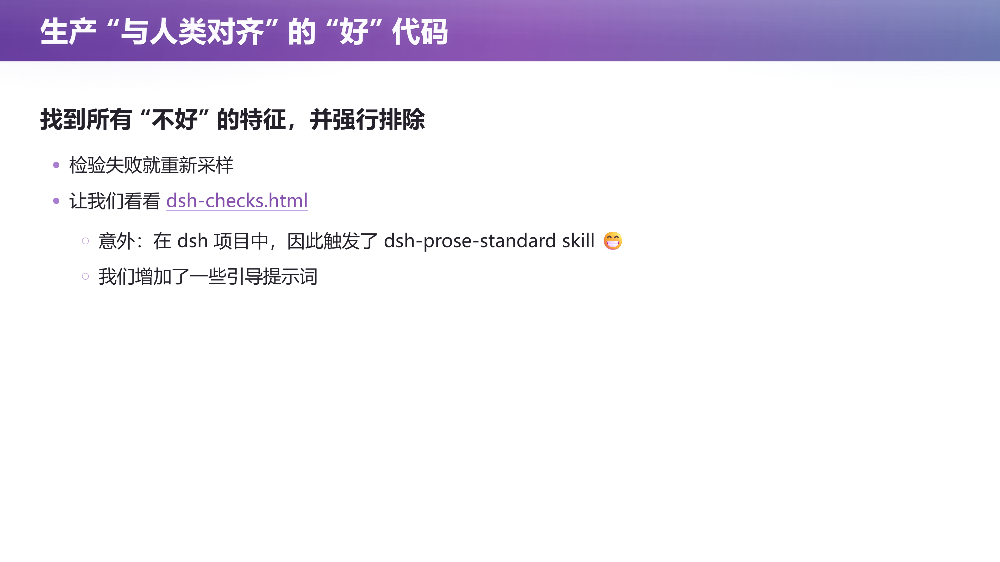
📷 生产"与人类对齐"的"好"代码：找到所有"不好"的特征，并强行排除
回到原视频 (01:30:00)
3.7 排除了坏答案，还没有学会什么是好
(参考时间: 01:30:50)
虽然已经尽了最大努力，DeepSeek Harness 也尽了最大努力，但还是有很多问题没有解决：小事已经解决了，大事我们还需要一个 taste-bench。
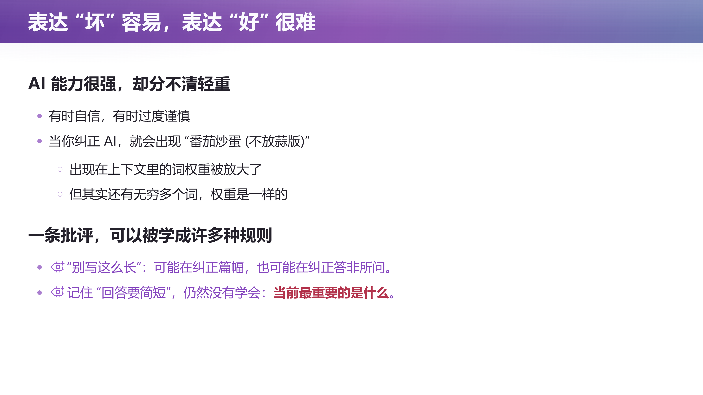
📷 表达"坏"容易，表达"好"很难：AI 分不清轻重
回到原视频 (01:31:00)
AI 今天能力很强，但它分不清轻重：
- 有时过分自信：它觉得搞定了，其实没有达到我的预期；
- 有时过度小心：这件事其实不用那么小心，但它做了非常多的测试；
- 而如果你去纠正它，糟糕了——你但凡说"不要这样"，它就会把"不要这样"写进文档：先在文档里写一份，在代码里再写一份，注释里再写一份；不断膨胀的上下文又会不断抢夺它的注意力。
于是有了那个绝妙的比喻："番茄炒蛋（不放蒜版）"。
你纠正"不要放蒜"，本意可能只是让它自然地给出合适做法；它却把这次纠正变成了标题里最显眼的内容。接着纠正香菜、韭菜、辣椒，就得到"番茄炒蛋（不放蒜、不放香菜、不放韭菜、不放辣椒……）"。
为什么？讲者的解释是一个解释性比喻（不是对模型内部权重的测量）：
每一个出现在上下文里的词，都会在模型眼里被认为是非常重要的。 但其实这个世界里还有无穷多的词——"不要放韭菜""不要放蘑菇"——它们和"不要放蒜"理论上权重是一样的，只是我没有写进去。模型不理解它们之间的重要性。
一条批评，可以被学成许多种规则。 比如"别写这么长"：
- 可能是在批评篇幅，也可能是在批评答非所问；
- 模型若只记住"回答要简短"，下次可能删掉真正需要的解释，却继续回答错误的问题；
- 某套去除套话的规则在一种语言中有效，换到中文也未必仍然奏效。
这里讲者拿出了他的老本行：程序合成（program synthesis），以及其中一个核心方法 CEGIS（Counterexample-Guided Inductive Synthesis，反例引导的归纳合成）——它和今天我们用大模型的方式很像：
- 我有一个 spec：
F(1) = 2、F(2) = 3、F(3) = 4； - 模型生成一个
λx. x + 1； - 我再给一个反例：
F(4) = 6； - 模型再生成
if x == 4 then 6 else x + 1； - ……于是就有了那个公式：
graph TD
P["初始约束 P"] --> G1["生成候选程序"]
G1 --> C1["验证者找到反例 C₁"]
C1 --> P2["P ∧ ¬C₁"]
P2 --> G2["再生成候选"]
G2 --> C2["又找到反例 C₂"]
C2 --> P3["P ∧ ¬C₁ ∧ ¬C₂"]
P3 --> G3["……"]
所以"番茄炒蛋不放蒜"是一个很糟糕的提示词：你说了"不放蒜"，就意味着"不放香菜、不放韭菜、不放辣椒"同样重要——而那个 high-level 的 guideline 其实还不知道。
他还给了一个极小但致命的例子：
在无界整数上找一个 k，使所有整数 x 都满足 x ≠ k。
每次验证者拿出反例 x = k，生成者就换一个尚未出现过的 k——它总能通过此前积累的有限反例，却永远完成不了目标，因为目标本来就无解：对任何 k，都可以取 x = k。
这个例子（改写自 Solar-Lezama 的课程）说明：你需要检查搜索空间和目标，而不只是"又排除了一类坏情况"。
更常见的困境是：答案并非不存在，只是我们一直困在错误的表达方式里。 这正是水罐实验（Luchins, 1942）要说的：
- 连续练习"能用 B − A − 2C 解决"的题目，会让人形成解题定势；
- 现在给三个无刻度水罐：A = 23、B = 49、C = 3，要求量出 20；
- 熟悉的办法：49 − 23 − 2×3 = 20；
- 更直接的办法：23 − 3 = 20。
旧办法依然答对；而"继续改良它"的反馈里，未必会出现发现新办法的线索。局部修改无法逃出已经进入的陷阱——我们需要设计空间的跳跃。
对应到 AI：只问"怎样把这份答案改好一点"，就可能一直把"换一种答法"留在搜索范围之外。对于代码也是如此：不断给原方案增加分支，可能永远比不上重新划分状态或接口。
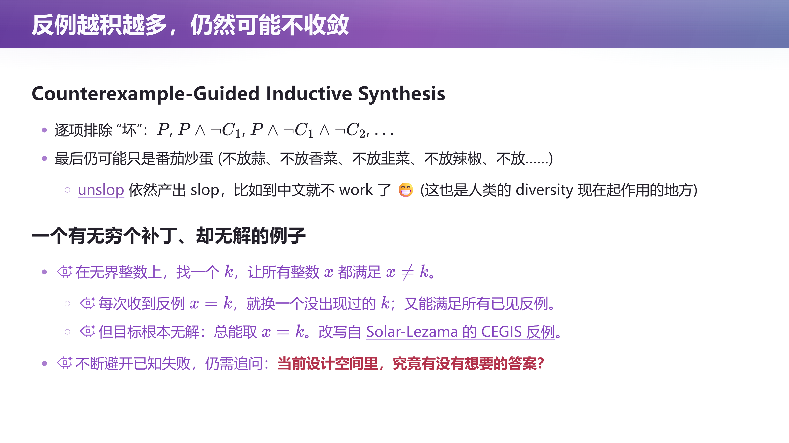
📷 反例越积越多，仍然可能不收敛：CEGIS 与那个"有无穷个补丁却无解"的例子
回到原视频 (01:33:00)
3.8 "蒸馏我自己"：为什么还没成功
(参考时间: 01:36:50)
最后讲者分享了一个非常贴身、而且到目前为止仍然失败的实验。
问题是这样：
我有所有我回复过的 email，应该如何用好？
他发现：把回过的所有邮件都放进上下文、说"你就照着我的风格来"，模型也做不对；"模型没有提炼这种东西的能力"。于是他想做一个递归自我改进（recursive self-improve，RSI）的 loop：
graph TD
S["当前的 un-slop / write-email skill"] --> G["用 skill 生成回信"]
G --> E{"评估：更像我还是更不像？"}
E -- "更像（metrics 靠近）" --> K["保留这一次"]
E -- "更不像" --> R["要求它提炼一条<br/>更 general 的 guideline"]
R --> A["把 guideline 写回 skill"]
A --> G
评估怎么做？他说得很具体：
- 他有很多人写的文稿和回信，可以算出回复有多长；
- 还有一些统计信息，比如词频、句子长度、标点使用；
- 然后给模型一个 prompt："你可以 evaluate"——用这个 skill 去改写我过去回过的所有邮件（但不许看我的原回信），算出每一个 metric 是离我更近了还是更远了；
- 更近就留下；更远就要求它提炼一条 general 的 guideline——"不是'不要用 not X but Y 这种句型'这种具体的规则，而是一条覆盖更广的原则"。
比如"不要蒜"的本质到底是"不要无关的东西"，还是别的什么？能不能把一个 guideline 的 principle 加回到 skill 里，让它的品味提升？
但今年还做不到。 讲者说这仍然是失败的、没有收敛。
他提出了一个可能的解释（仍然是推测）：邮件保存的是"最后怎么说"，未必保存"为什么这样说"，更没有完整保留那些被放弃的选项。同样一句简短回复，可能来自事情很简单，也可能来自双方已经有充分共识；只模仿表面形式，会丢掉决定形式的条件。
一个值得验证的方向是：让同一封来信对应几种不同回复，比较各自的取舍理由，再用没有参与"加规则"的新邮件，检验这些取舍能否迁移。但这还不能作为已经成功的方法来介绍。
他最后落到一句很诚恳的话：
目前模型的"悟性"仍然不够：我们能够越来越精细地排除已知错误，却还没有因此获得一个知道何时应该打破惯例、重新选择方向的自己。
而他相信——因为今天讲的这条"人类的过程"是可同构的：
有没有可能我们有一个 self-improve 的 loop，最终能把小事干好的同时，也把大事干好？
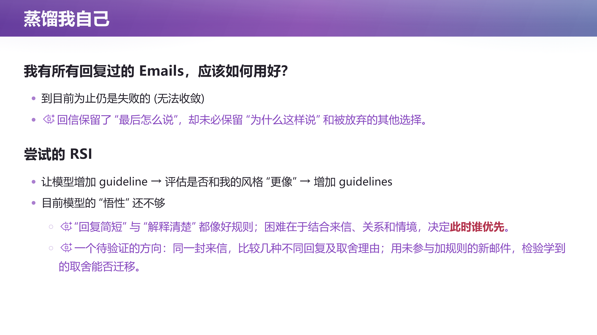
📷 蒸馏我自己：用所有回过的邮件训练一个"像我"的 skill，到目前为止仍然失败
回到原视频 (01:37:00)
附：官方参考与延伸阅读
以下链接来自本讲官方讲义（lect10.md），按对应章节列出。
第 1 章（暴论与建议）
- OpenAI：Building scientific understanding with academic communities —— 关于 ETH 结果的发布说明（发布方也强调这仍是需要学界独立检验的研究材料）。
- Spence 的教育信号理论 —— 大学既帮人获得能力，也帮企业识别能力。
第 2 章（软件的演化）
- 几种船的故事（课堂材料） —— 帆船 → 汽船 → USS Langley → USS Midway 的能力与组织方式变化。
- Linux CFS 设计文档 —— O(1) → CFS → EEVDF，以及 scheduling classes 如何把策略封装在边界后面。
- Python 3.0 What's New · Python 2 停止支持回顾 —— 不向后兼容的语义重整，以及迁移成本如何把期限从 2015 推到 2020。
- Kubernetes：Controllers · dockershim 移除说明 —— "核心轻、生态重"与责任边界。
- SWE-bench（arXiv:2310.06770） · 官方榜单 —— 真实 GitHub issue 上的修改任务；2025 年 7 月 mini-SWE-agent 在 Verified 子集达到 65%。
- Solar-Lezama：程序合成课程（CEGIS 与那个无解反例） —— "反例越积越多，仍可能不收敛"。
- Luchins（1942）的水罐实验 —— 解题定势：熟练本身也会制造陷阱。
- Thurstone（1927）—— 从成对判断中度量难以直接计量的属性，是 taste-bench 的方法学祖先。
第 3 章（回到 DeepSeek Harness）
- DeepSeek Harness —— 从第一天起的提交历史；
Cordis的 vendor 提交、event sourcing、终端→浏览器的转向。 - 课堂整理的提交历史 —— 本讲现场翻的那份时间轴。
- 课堂整理的检查规则 —— 七类 checker 的动机、例子与适用条件。
附录：课堂未展示的幻灯片
以下四页经逐帧比对，确认在课堂录像中未出现（讲者口头覆盖了部分内容，但页面没有停留），按流程收入附录。
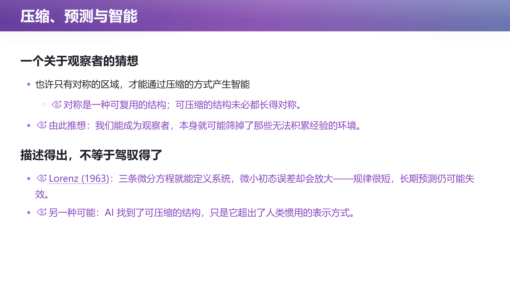
🖼️ 第 4 页幻灯片 · 压缩、预测与智能
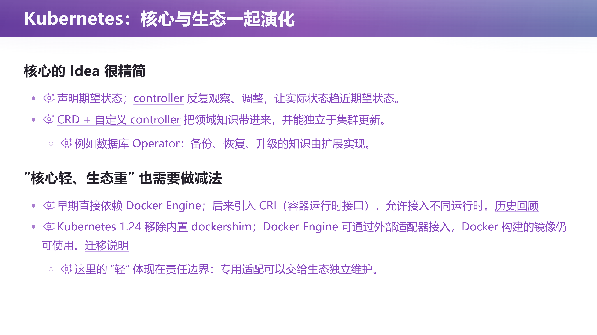
🖼️ 第 13 页幻灯片 · Kubernetes：核心与生态一起演化
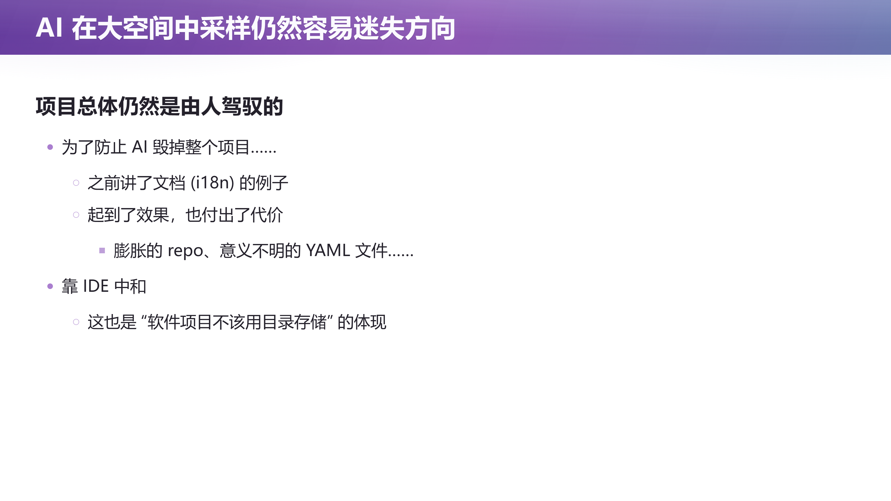
🖼️ 第 18 页幻灯片 · AI 在大空间中采样仍然容易迷失方向
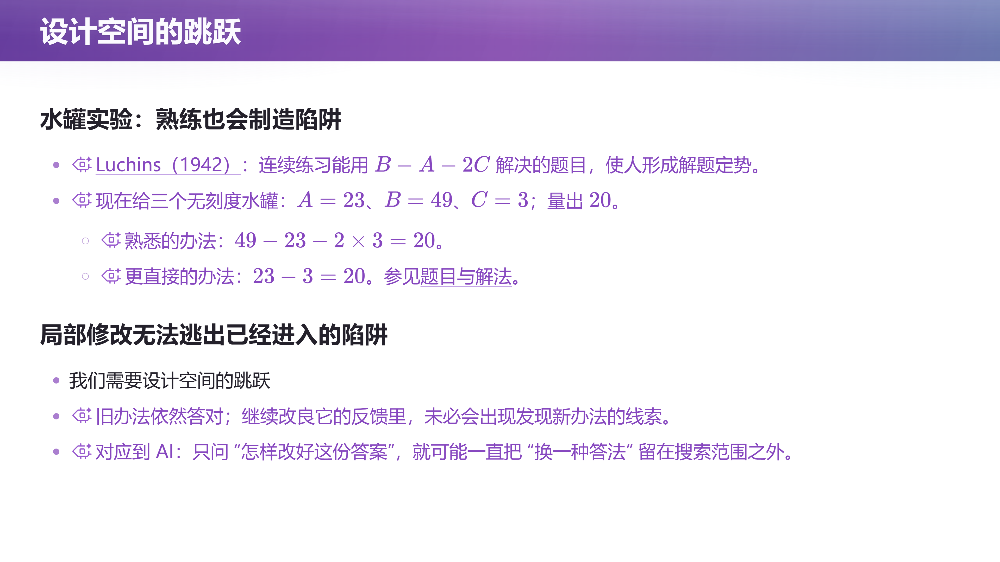
🖼️ 第 22 页幻灯片 · 设计空间的跳跃（水罐实验）
本电子书由 videobook 流水线生成。课程讲义与幻灯片版权归讲师所有，依 CC BY-NC 4.0 发布。